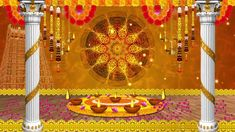

Pongal, a harvest festival, holds cultural significance in Andhra Pradesh as well. Known as "Makara Sankranti" or simply "Sankranti," it marks the transition of the sun into the zodiac sign of Capricorn (Makara). Here is a brief overview of the history and cultural aspects of Pongal in Andhra Pradesh: 1. **Agricultural Celebration:** - Pongal is primarily an agricultural festival, celebrating the harvest season and expressing gratitude to nature for a bountiful yield. Farmers express their joy and thanksgiving for the abundance of crops. 2. **Surya Deva Worship:** - Sankranti is also associated with the worship of Surya Deva (the Sun God). People wake up early, take ritualistic baths, and offer prayers to the sun as a gesture of purification and gratitude. 3. Pongal, a harvest festival, holds cultural significance in Andhra Pradesh as well. Known as "Makara Sankranti" or simply "Sankranti," it marks the transition of the sun into the zodiac sign of Capricorn (Makara). Here is a brief overview of the history and cultural aspects of Pongal in Andhra Pradesh: 4. **Pongal Dish:** - The festival is named after a traditional dish called "Pongal." It is a special sweet dish made with newly harvested rice, jaggery, and milk. The preparation of Pongal is symbolic of prosperity and abundance. .... 5.**Bhogi Festival:** - The day preceding Sankranti is celebrated as Bhogi, where people discard old and unnecessary items, symbolizing the discarding of the past and embracing the new. Bonfires are lit to burn these items. 6. **Kite Flying:** - Kite flying is a popular tradition during Sankranti in Andhra Pradesh. The skies are adorned with colorful kites, and people engage in friendly competitions, adding to the festive atmosphere. 7. **Cultural Events:** - Sankranti is not only an agricultural festival but also a time for cultural events and social gatherings. Traditional folk dances, music performances, and other cultural activities are organized. 8. **Social Bonding:** - Families come together during Sankranti, reinforcing social bonds. It is a time for relatives and friends to share festive meals, exchange gifts, and celebrate the collective joy of the harvest. 9. **Rural Fairs:** - In some regions, rural fairs or carnivals are organized, featuring traditional crafts, performances, and entertainment. These fairs contribute to the festive spirit and promote the cultural heritage of Andhra Pradesh. 10. **Spirit of Unity:** - Sankranti emphasizes the spirit of unity and collective celebration. It transcends religious and social boundaries, bringing people from diverse backgrounds together to rejoice in the abundance of nature. In Andhra Pradesh, Pongal is a cultural extravaganza that reflects the agrarian roots of the region while incorporating vibrant traditions and expressions of joy. The festival showcases the unity of communities and the deep connection between the people and the land they cultivate. |
 |